>

正文
Seedance 2.0 很好用，但上传 AI 仿真人的素材，很容易被拦。这两周我被问得最多的就是一句话：Seedance 怎么过脸？
我把能找到的14种方法都跑了一遍，整理成下面这一篇：
- 4 条官方合规路径（可以商用）
- 3 条个人实测可用的方法
- 7 条已经废了的避坑清单
- 3 条跑下来的实践小建议
具体方法都附步骤 + 可直接复制的提示词，看完就能上手。
一、4 个官方合规路径
能走官方就走官方：稳定性更高，商用合规性也更清楚。先一张图速览：
（一）本人数字分身
做一次本人活体认证，建个属于自己的数字分身，之后用这个分身生成视频就不会再被拦：
- 打开即梦APP（网页版没有）→ 我的形象 / 数字分身
- 跟着提示做活体认证，1 分钟搞定
- 创作页选这个分身就行，口播、剧情、对口型都能跑
做个人 IP 或长期账号的，先把这一步弄好。
（二）同账号二创豁免
自己账号下、由 Seedance 生成的含人脸视频，再拿去延长、改分镜，误判概率很低，但必须是 Seedance 自己生成的视频，外部导入素材不适用：
- 用数字分身或下面的虚拟人像跑一段 5 秒基础视频
- 把这段视频当参考，做延长、改分镜、切场景都可以
（三）火山方舟虚拟人像库
跑口播、电商、剧情这种不在乎人物是谁的内容，直接用官方虚拟人像最省事，可商用：
- 打开火山方舟体验中心，开通 Seedance 2.0
- 进「虚拟人像库」，挑个适合的形象
- 在视频生成页引用它，写提示词，直接出片
（四）真人人像授权通道
要批量用某个真人肖像（带货达人、代言人、矩阵号统一形象），得走火山方舟的真人人像录入。流程：
- 火山方舟体验中心生成人像录入邀约二维码
- 把二维码发给授权方本人，对方手机扫码自助完成认证 + 上传素材 + 授权
- 授权完了，形象就进了你账号下的素材库，商用就这一条路。
如果你自己生成的AI人脸或人物形象，被平台误判为真人无法过审，上面四条都不行，可以尝试下面的方法！
二、电影级角色设计板法（最新）
思路：先做一张足够完整的角色设计板，让 Seedance 直接把它当成角色参考总表来理解。
这种方法比较新，使用了GPT-Image2生图的能力，尤其适合：短剧、长期 IP、系列视频、口播角色、电商人物场景等。
Step 1：先用 GPT-Image 2 做角色设计板
在 GPT-Image 2 使用完整 Prompt 生成一张电影级角色设计板。
这张板里最好有：主立像、多角度全身图、头部研究图、表情参考、服装拆解、一张电影感肖像。
核心是做一张信息更完整、更像影视开发资料的角色卡。
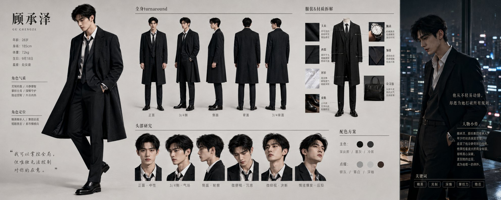
角色设计板参考提示词：
请创作一张高完成度的「电影级角色设定板」。 角色名称：【填写名字】 年龄：【填写】 身高：【填写】 体型：【填写】 风格方向：【电影级风格化写实 / 半写实 / 动画电影感 / 东方角色设计等】 性格关键词：【填写3—5个】 外貌特征：【脸型、眼睛、发型、肤色、独特记忆点】 服装设定：【上装、下装、外层、鞋子、配件、道具】 场景气质：【角色属于什么环境 / 职业 / 社会身份】 要求生成一张像影视或动画项目开发用的高级角色提案板，而不是普通三视图。 版面结构必须包含： 1. 一张主视觉角色立像 2. 一组全身多角度转面图（正面、3/4、侧面、背面、3/4背面） 3. 一组头部研究图（正面、3/4、侧面、低头、抬头、动态角度） 4. 一张电影感情绪肖像 5. 一组服装与配件拆解说明 6. 少量专业标注信息（角色名、身高刻度、材质备注、性格关键词） 排版要求： - 横版大画幅 - 不要规则网格，不要机械对称 - 构图要像美术指导设计过，略带不对称感 - 背景为中性灰或浅灰提案板质感 - 画面高级、清晰、专业、具备电影提案板气质 表现要求： - 角色像真实演员在镜头中被捕捉，而不是摆拍模特 - 五官、身材比例、发型、服装在所有角度中必须严格一致 - 皮肤、布料、金属、皮革等材质必须真实 - 整张图要有电影感、角色感、故事感和高一致性
Step 2：把整张角色设计板上传到 Seedance
把这张设计板直接当主参考图上传，搭配提示词：
参考上传的电影级角色设计板，生成超写实真人摄影质感视频，真实细腻皮肤纹理，电影级光影和质感，严格保持人物五官、发型、身材比例、服装细节完全一致，自然面部表情和肢体动作，画面稳定无闪烁，高清电影质感。
角色设定越具体，一致性越稳，特别适合长期做同一个人物。
三、彩铅 + 多视图法
思路：彩铅把真人皮肤抹掉，三视图把人脸细节补回来。
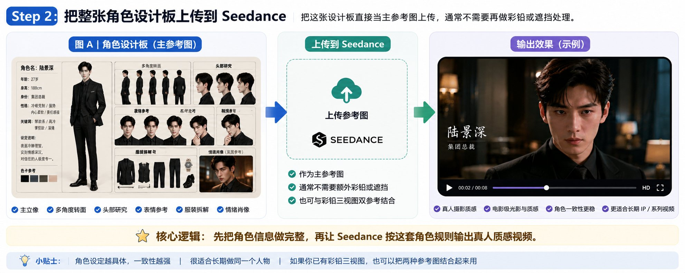
Step 1：准备原图和三视图
一张AI人物的高清正面图，用任意生图工具（GPT-image-2 / 即梦 / Midjourney），出正面 + 45° 左侧 + 45° 右侧三张图，横着拼成一张长图。三张图里五官、发型、衣服要完全一致，然后做彩铅处理。
Step 2：把脸做成彩铅（关键步）
使用AI进行局部重绘，只对三视图里所有人物的脸做彩铅化，身体和背景保留原图质感。
Step 3：彩铅化的三视图当参考图上传 Seedance 出片
提示词：
参考上传的角色设定图，生成超写实真人摄影质感视频，真实细腻皮肤纹理，电影级光影，保持人物五官、发型、服装完全一致，自然面部表情和肢体动作，画面稳定无闪烁。
核心： 上传的是彩铅图，提示词让模型出真人质感，意思就是让它「以这张彩铅图当骨架，最后给我出真人」。
四、局部遮挡法
彩铅法在多人出镜、复杂动态这种场景下还原度会吃力，这时候换这个。
思路：每张图都不提供完整脸部信息，但组合后能补足五官参考，让 AI 更容易还原同一个虚拟角色。两种方法按场景选一个：
流派 1：模糊主图 + 五官特写（单人）
准备两张图：
- 图 A：完整原图，脸部重度高斯模糊，只留脸型和头部轮廓
- 图 B：单独把眼睛、鼻子、嘴巴拼成一张小图，纯白背景
图 A 放第一位作主参考图，同时上传图 B，提示词用 @ 引用：
参考 @图片1 的人物位置、服装、身体动作，参考 @图片2 的人物五官特征，补全清晰自然的完整人脸，保持人物脸型、发型完全一致，超写实真人质感，高清画质，画面稳定
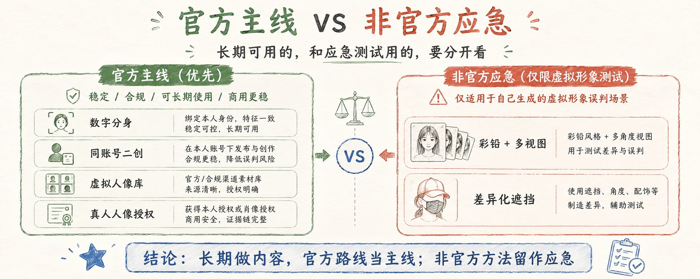
流派 2：三视图差异化遮挡（多人 / 高辨识度）
出正面 + 左侧 + 右侧三视图，拼成横向长图，然后做差异化遮挡：
- 正面：挡鼻子 + 嘴巴，留眼睛
- 左侧：挡左眼 + 嘴巴，留鼻子
- 右侧：挡右眼 + 鼻子，留嘴巴
单张图都没完整人脸，三张拼起来反而把五官全覆盖了，AI 出片时会自己从三张里抽信息补全。上传拼好的图，提示词补一段：
补全完整对称的人物五官，保持面部特征完全一致，超写实真人质感，画面稳定无闪烁。
五、已经废了的 7 种方法
这些方法现在基本都不行，通过率没有上面的方法高。
- 轻微马赛克 / 半透明网格： 太轻微的遮挡和马赛克无效
- 单张脸三图切割： 也会触发识别真人，AI 拼碎片还容易脸崩
- 单纯降质模糊： 低清、加噪点挡不住识别，过了审画质也不行
- 单纯三视图： AI 生图工具生成的三视图脸部太真实也一样直接被拒
- 跨账号二创： 二创豁免只算自己账号下、Seedance 自己生成的视频，外部素材一律走完整审核
- 单纯美颜 / 换背景： 也消不掉真人脸的特征，基本无效
- 单纯提示词写"虚拟人物"： 审核看的是上传素材，不是提示词里写了什么
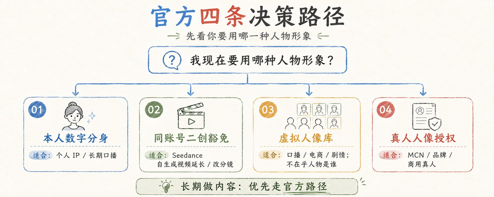
六、3个小建议
- 失败记录要及时清理： 人脸审核不通过的记录都删掉，图片经过处理后再重新上传，不要反复用同一张图。
- 脸占画面越小越容易过： 中景、全身景比大头照过得多。
- 公众人物 / 明星脸 / 知名动漫角色是红线： 版权风险极高，下架、限流、封号都可能，不要尝试。
七、写在最后
平台对人脸的审查是合理且必须的，每个人都有自己的肖像权，AI生成的越拟真，人脸就越容易被侵犯。所以我分享的方法都是基于 AI 生成的仿真人脸去做内容，重点在于如何避免被平台误判，而不是去侵犯别人的肖像权。
个人做内容可以用好官方的数字分身功能，一次的投入，省后面一堆事。
觉得有用就转发+收藏，点个免费关注 @MrLarus 👍 我继续分享 Seedance/GPT-Image 2.0 爆款工作流和提示词！
很多细节和经验受限于篇幅无法详述，也可以加入交流群一起学习！
这个工作流适合谁
- ✅ 用 Seedance 2.0 做 AI 视频但总被卡脸的人 — 看完就去试试上面的方法
- ✅ 做 AI 短剧、口播、电商视频的创作者 — 电影级角色板法尤其适合长期 IP
- ✅ 需要批量生成同一个人物形象的团队 — 数字分身或授权通道最稳妥
- ✅ 想做长期 IP 但被平台审核困扰的人 — 彩铅法和遮挡法值得一试
核心心法： 能走官方就走官方，商用场景老老实实走数字分身或授权通道。非官方方法仅限个人测试，不要挑战平台底线。
>
📸 更多参考图
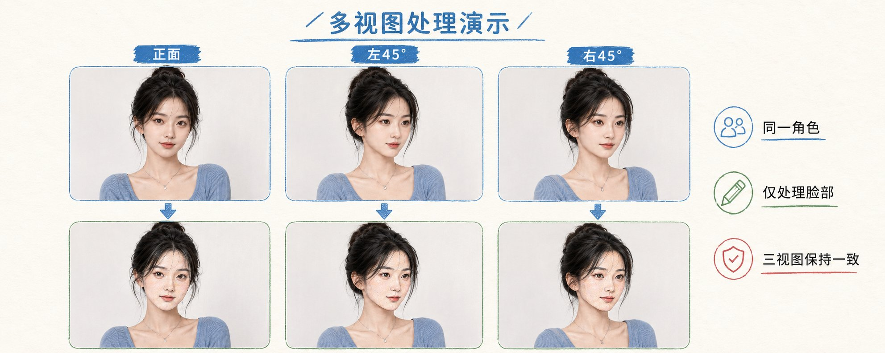
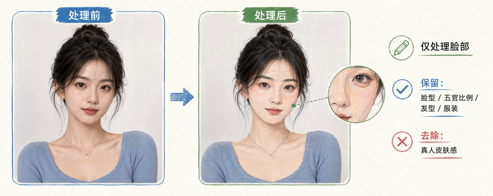
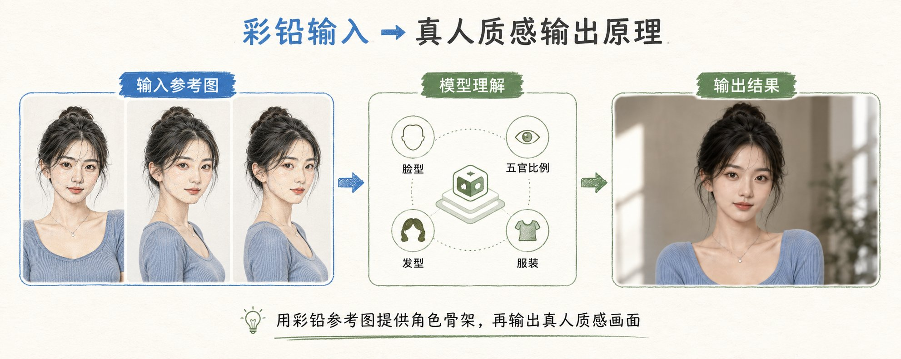
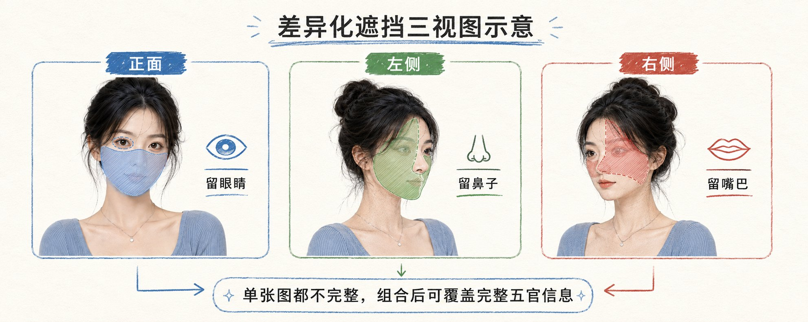
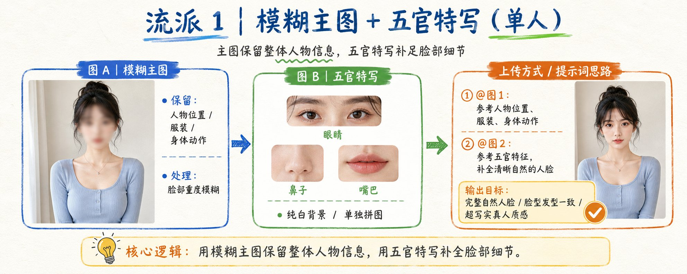
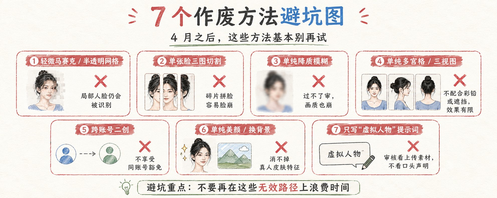
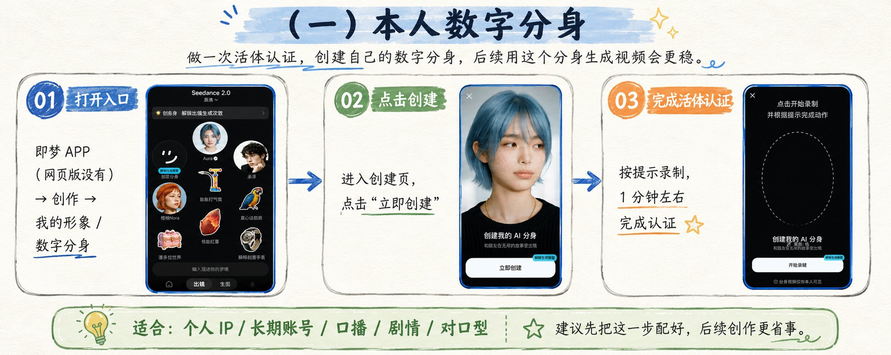
>
一、4つの公式準拠ルート
(一)本人のデジタル分身
即夢APP→マイイメージ／デジタル分身→生体認証1分→作成ページでこの分身を選択
(二)同一アカウントでの二次創作免除
自分のアカウントでSeedanceが生成した顔入り動画であれば、延長やカット割りの変更で誤判定される確率が低くなります。必ずSeedance自身が生成したものである必要があり、外部からのインポートは適用外です。
(三)火山方舟バーチャル人像ライブラリ
人物が誰であるかを気にしないコンテンツであれば、公式のバーチャル人像をそのまま使用できます。商用利用も可能です。
(四)実在人物の肖像権使用許可ルート
火山方舟→QRコード生成→権利者にスキャンして認証してもらう→商用利用唯一の正規ルートです。
二、映画級キャラクターデザインボード法（最新）
考え方：まず完全なキャラクターデザインボードを作成し、Seedanceにキャラクター参照マスター表として活用させる。
Step1：GPT-Image2でキャラクターデザインボード作成
完全なPromptで映画級キャラクター設定ボードを生成：メイン立ち絵＋多角度全身図＋頭部研究図＋表情参考＋服装分解＋映画的肖像。
Step2：Seedanceにアップロード
Prompt：映画級キャラクターデザインボードを参照し、超リアルな実写風写真クオリティの動画を生成してください。五官と服装の一貫性を厳密に保ってください。
三、色鉛筆＋マルチビュー法
Step1：正面＋左45°＋右45°の3枚の画像を1枚の長い画像に合成
Step2：部分再描写（局部重绘）で、顔部分のみを色鉛筆タッチに加工
Step3：色鉛筆の三面図＋超リアルPromptをアップロード
核心： 色鉛筆画をアップロードし、Promptでモデルに実写風質感を出させる。
四、部分遮蔽法
流派1：ぼかしメイン画像＋五官クローズアップ
図A：完全なオリジナル画像の顔部分に強いGaussian Blur（ガウスぼかし）を適用
図B：目・鼻・口を切り抜いて小さな画像に合成
流派2：三面図による差別化遮蔽
- 正面：鼻＋口を遮蔽
- 左側：左目＋口を遮蔽
- 右側：右目＋鼻を遮蔽
五、廃止された7つの方法
- 軽度モザイク／グリッド加工 → 効果なし
- 単一顔画像を3分割 → 顔崩れ
- 単純な画質低下・ぼかし → 回避できない
- 単純な三面図 → リアルすぎて拒否される
- 異なるアカウントでの二次創作 → 適用外
- 美顔／背景変更 → 消せない
- Promptに「バーチャルキャラクター」と記述 → 審査は素材を確認する
六、3つの小さなアドバイス
- 失敗記録はこまめに削除しましょう
- 顔が画面に占める割合が小さいほど通過しやすくなります
- 有名人／芸能人の顔は絶対に避けてください（レッドライン）
>